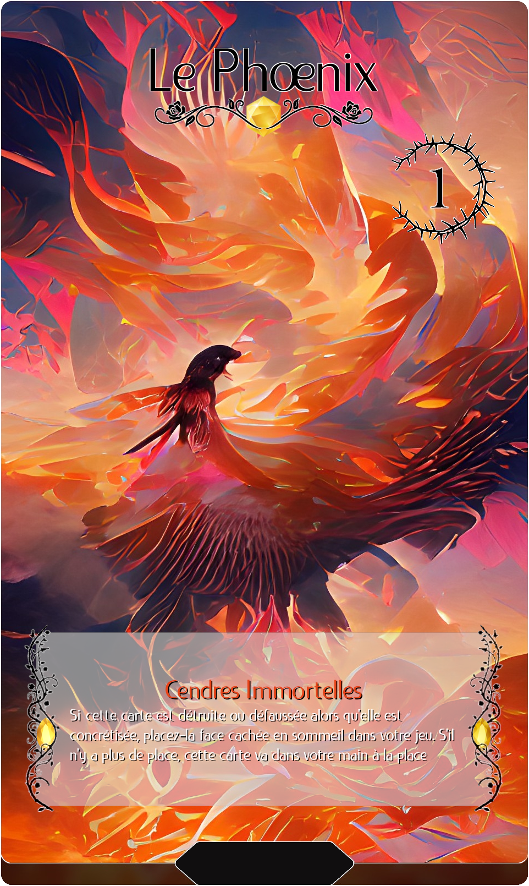
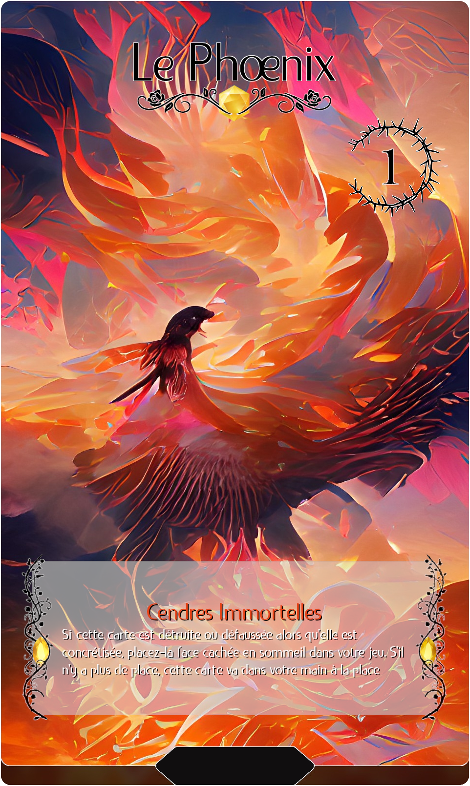
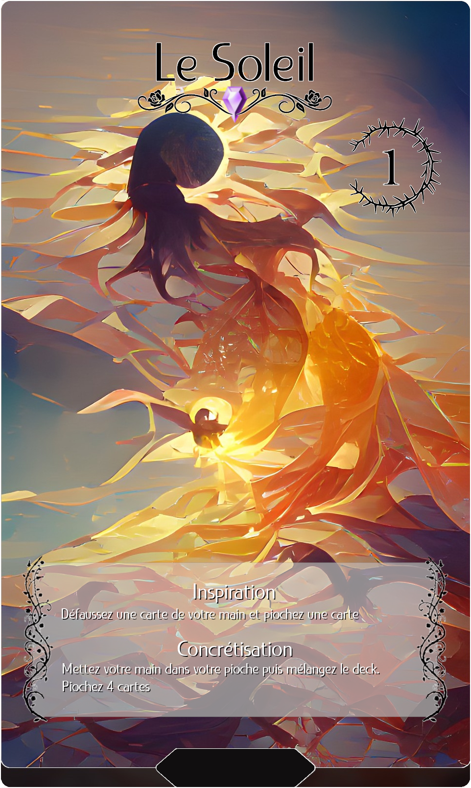
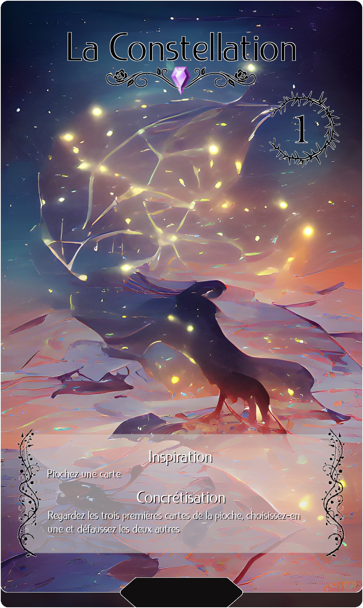
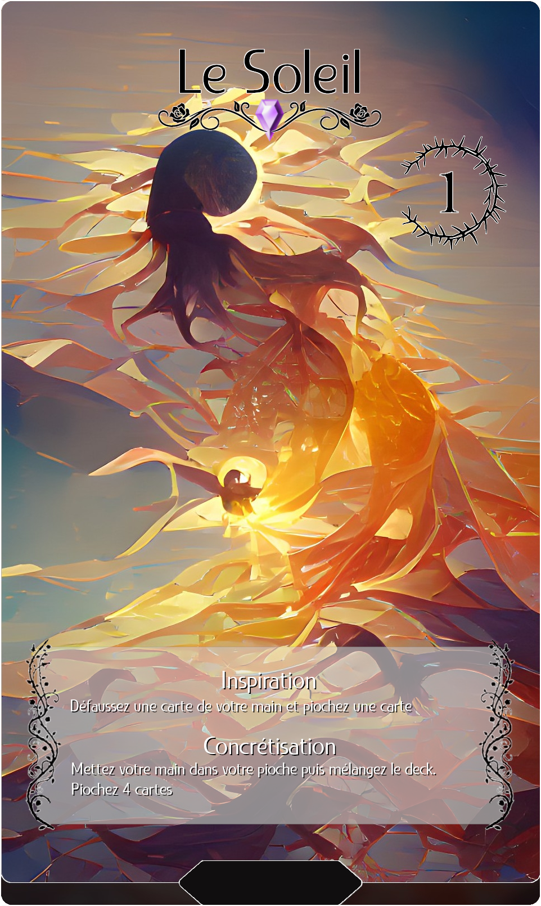
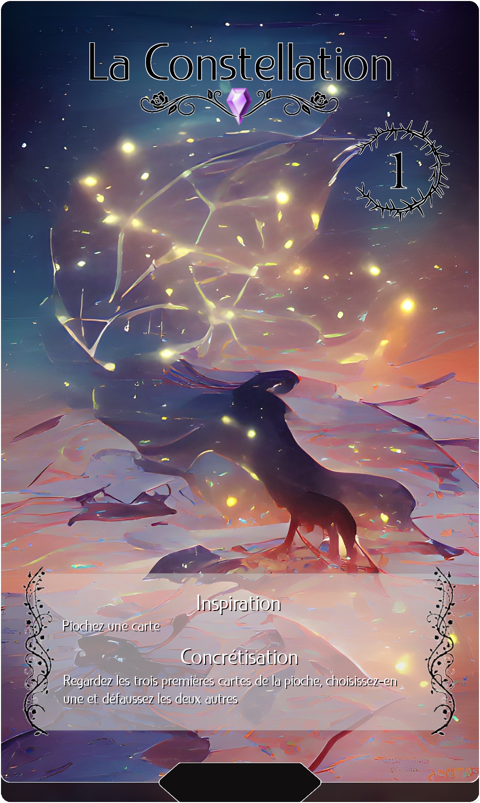
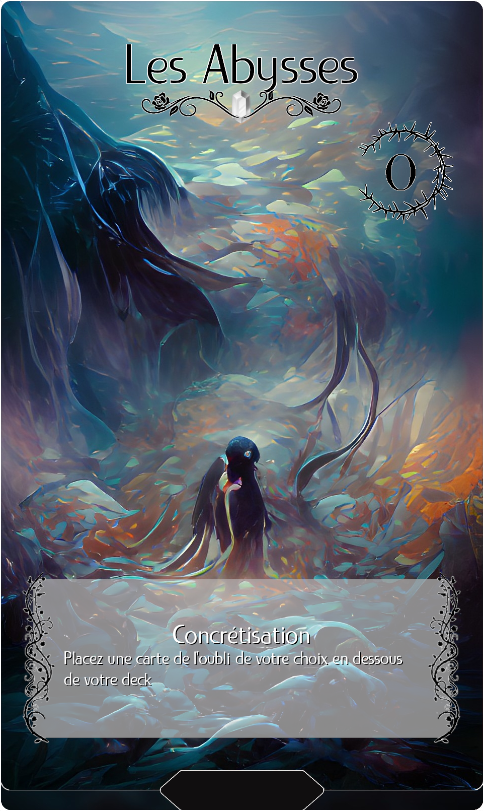
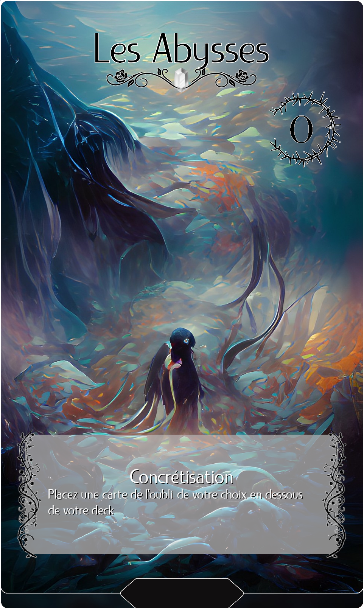

Présentation Générale
Étant très fan de jeu de cartes à collectionner, j'ai toujours voulu avoir l'occasion d'en imaginer un moi-même. Je m'étais déjà essayé à quelques idées sur des bouts de papier, mais le problème d'avoir des cartes non graphiques, c'est que les joueurs s'en lassent très rapidement et on ne peut pas entièrement tester ses idées de gameplay.
Avant tout les MidJourney et Dall-E, la génération d'images était une pratique peu connue et assez instable. C'est en voyant les résultats étranges et farfelus de cette IA, un précurseur il y a quelques années, que j'ai décidé de me lancer dans la réalisation de mon projet.
Les cartes avaient une ambiance, un thème très fort : personnellement, j'y voyais une concrétisation des rêves oniriques et merveilleux sur un support visuel. Je me suis alors donné comme but de réaliser un jeu qui rappelle ce thème aux joueurs, que l'ambiance soit autant là dans le visuel que dans le gameplay.


 


 




 
